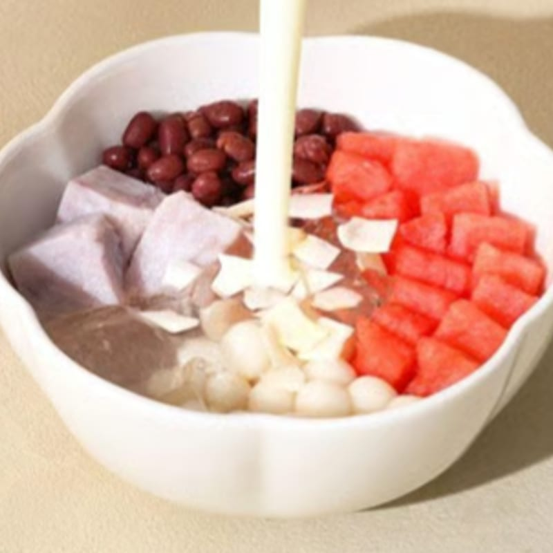
Watermelon Coconut
Freshly cut watermelon and rich coconut milk with chewy taro balls, mini rice balls, red beans, cooling jelly, and crispy coconut chips.
FruityRefreshingCold only
Dishes without a location note are served at most of our shops, and many bowls also come warm. Selections change, so ask us what's fresh today.
A little something for right now

Freshly cut watermelon and rich coconut milk with chewy taro balls, mini rice balls, red beans, cooling jelly, and crispy coconut chips.
The ones regulars come back for
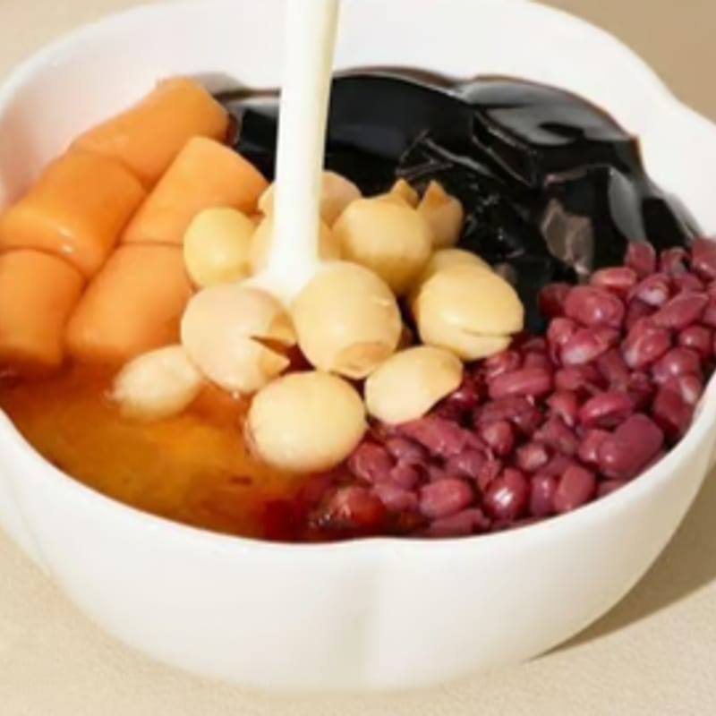
Rich fresh milk with chewy taro balls, tender red beans, silky grass jelly, peach gum, and lotus seeds.
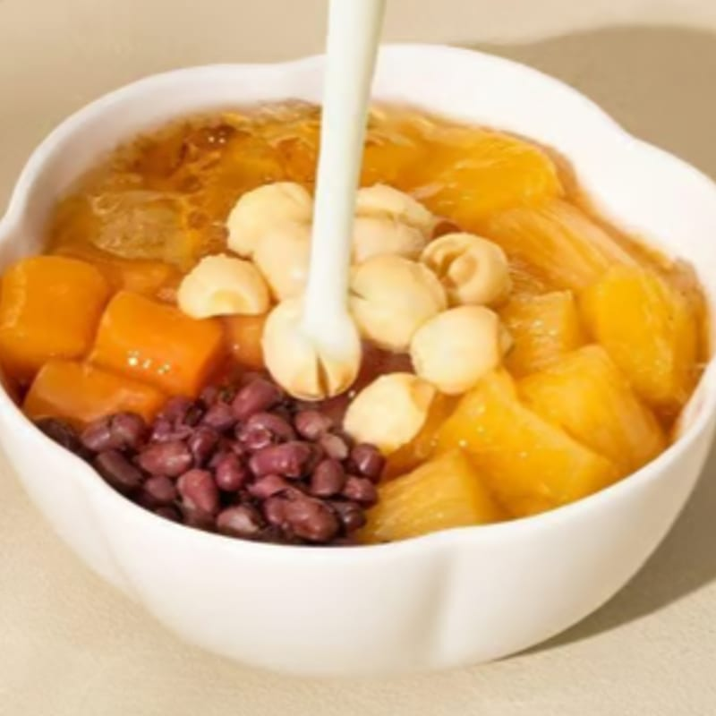
Chewy tapioca pearls in a rich fresh milk base, layered with peach gum, red beans, taro balls, and lotus seeds.
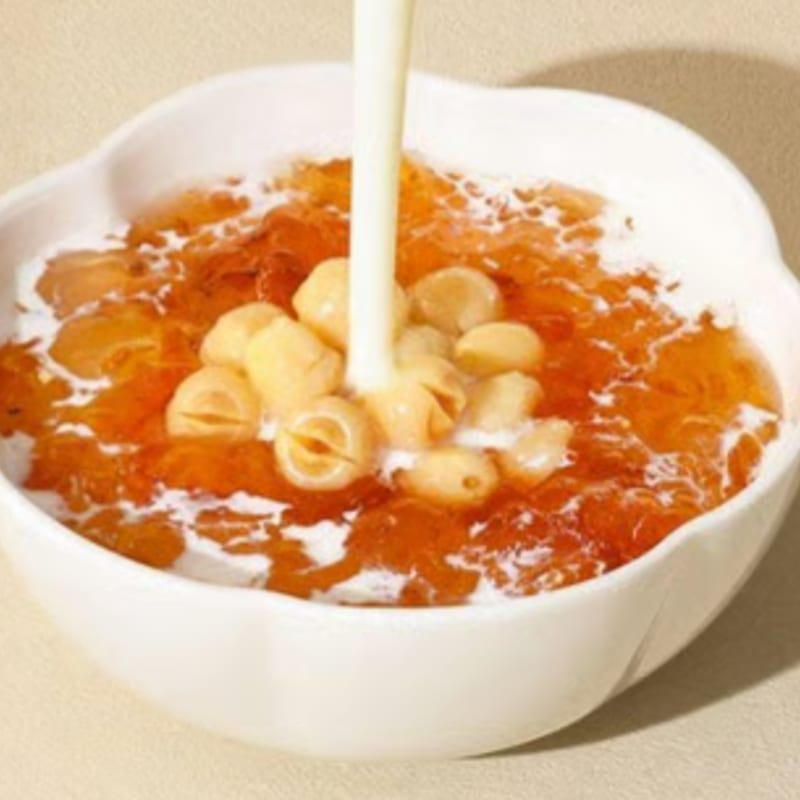
Premium natural peach gum and tender lotus seeds, blended with fresh milk.
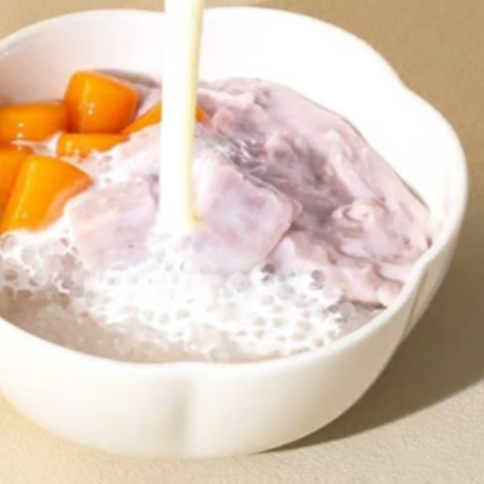
Slow-cooked taro purée, tender taro chunks, and chewy sago pearls in rich coconut milk.
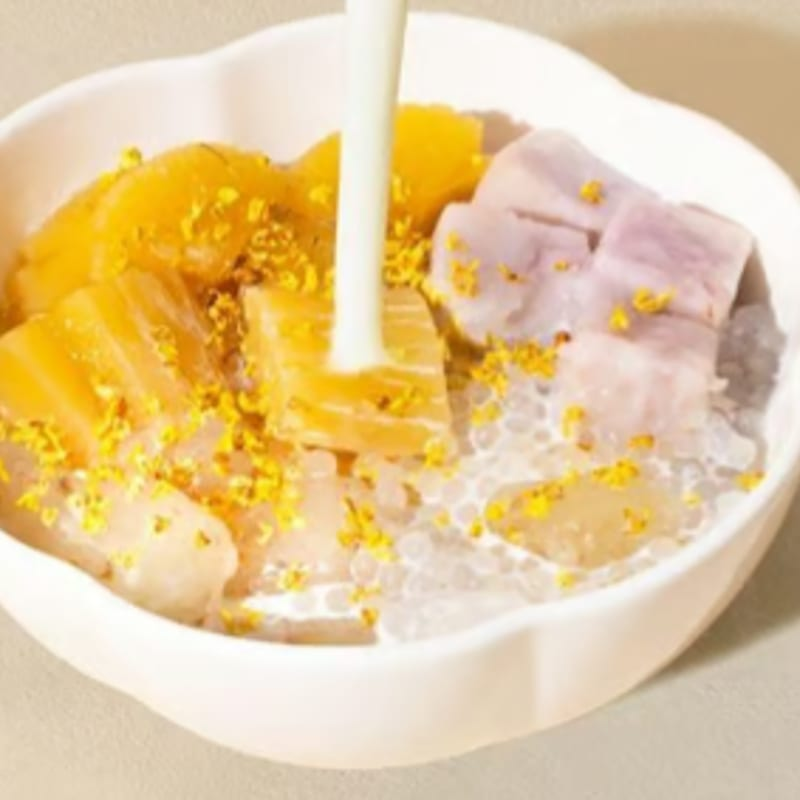
Chewy tapioca pearls, little sago pearls, and soft taro in creamy coconut milk. Called Coconut Cassava Adazi in Bellevue.
Bright fruit, silky bases, and joyful textures
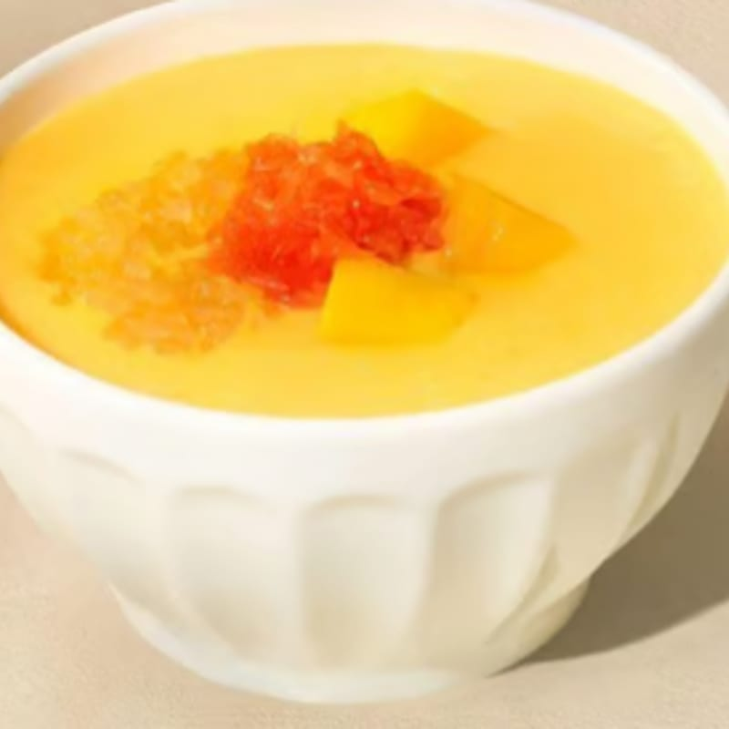
Fresh mango cubes and house-made mango purée in creamy coconut milk with a hint of condensed milk.
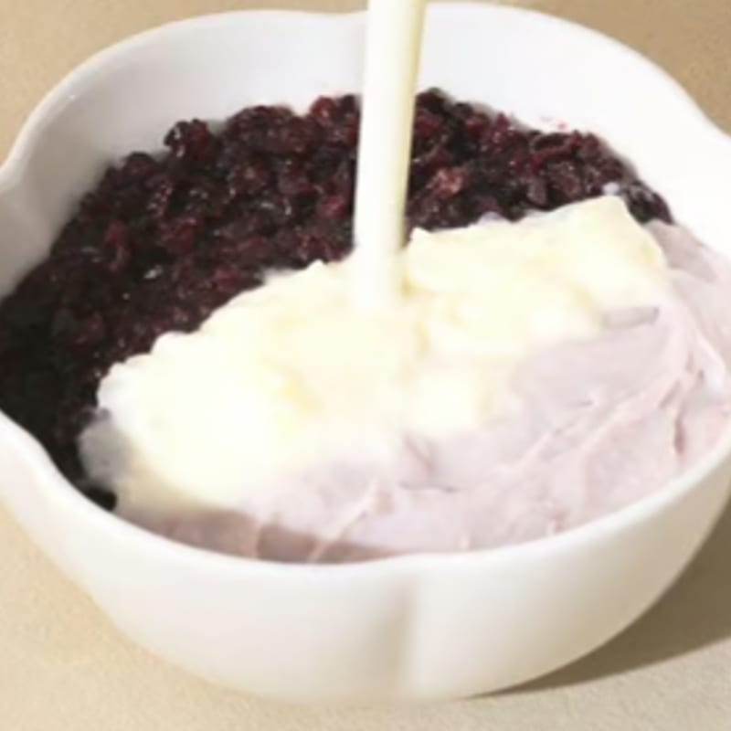
Smooth taro blended with creamy fresh milk, paired with fragrant black glutinous rice and chewy mochi.
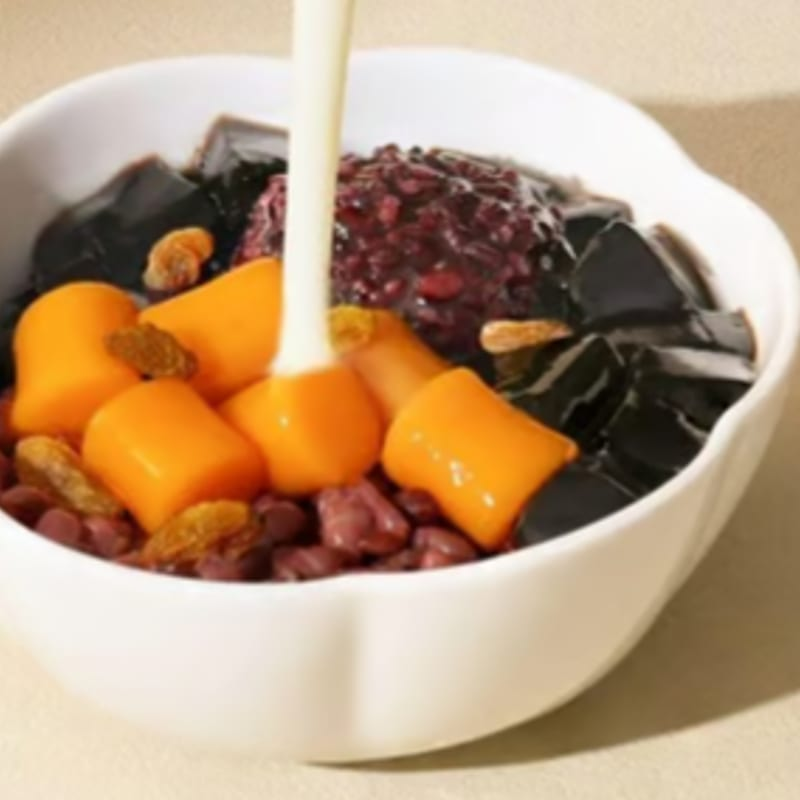
Chewy taro balls and silky grass jelly, topped with creamy red beans and a smooth milk base.
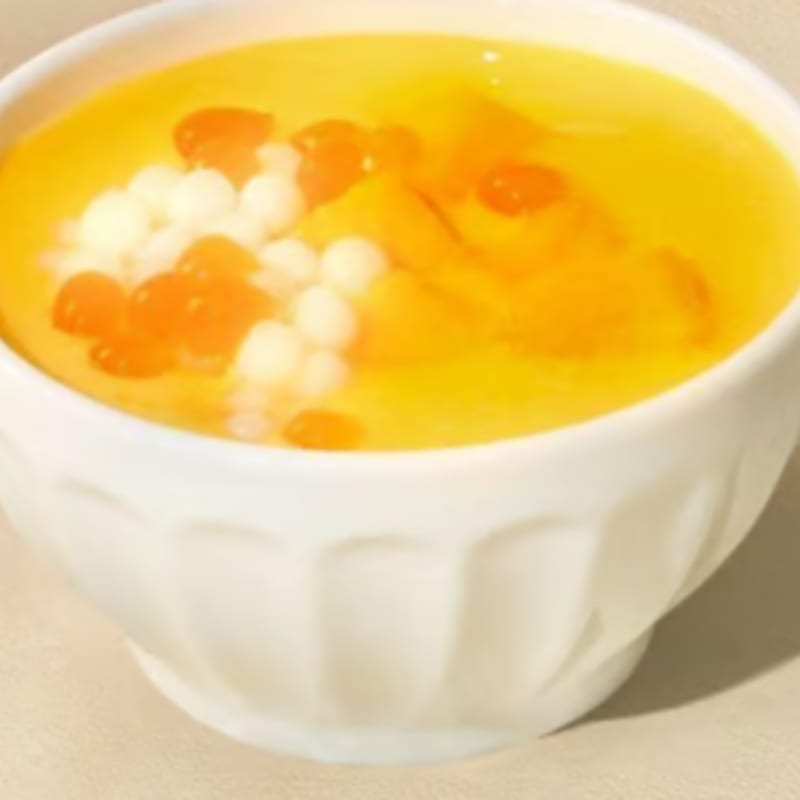
Juicy fresh mango and rich mango purée with soft, chewy mochi balls and tender sago.
Silky, chilled, and lightly sweet
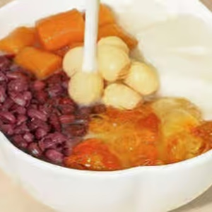
Silky chilled tofu pudding with peach gum, red beans, taro balls, and lotus seeds.
Only at Rowland Heights & San Gabriel
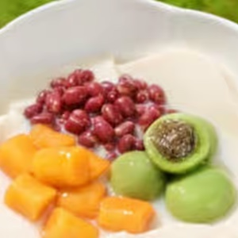
Silky chilled tofu pudding with Longjing green tea mochi, red beans, and taro.
Only at San Gabriel
Fluffy, frosty, and made for sunny days
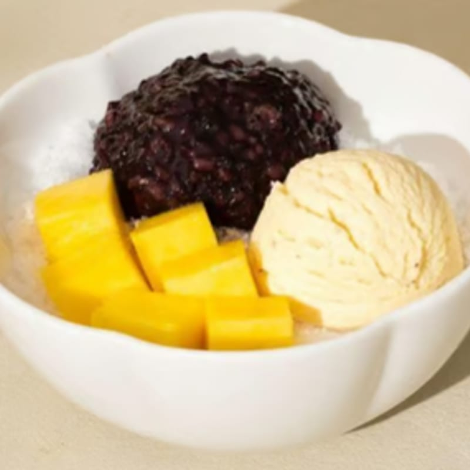
Sweet, fragrant mango with soft black glutinous rice and a scoop of ice cream.
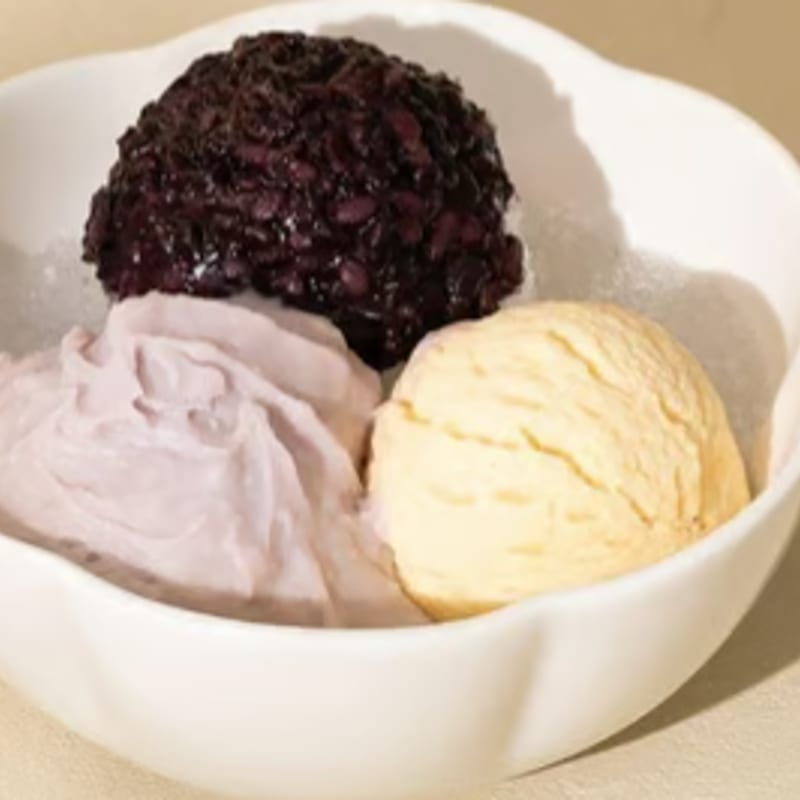
Smooth, velvety taro purée with soft black glutinous rice and a scoop of ice cream.
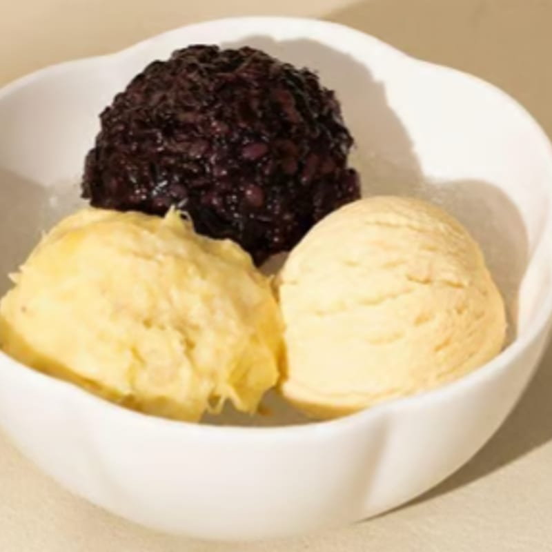
Premium durian for a rich, creamy flavor, paired with soft black glutinous rice.
A cloud of cream, with fruit on top
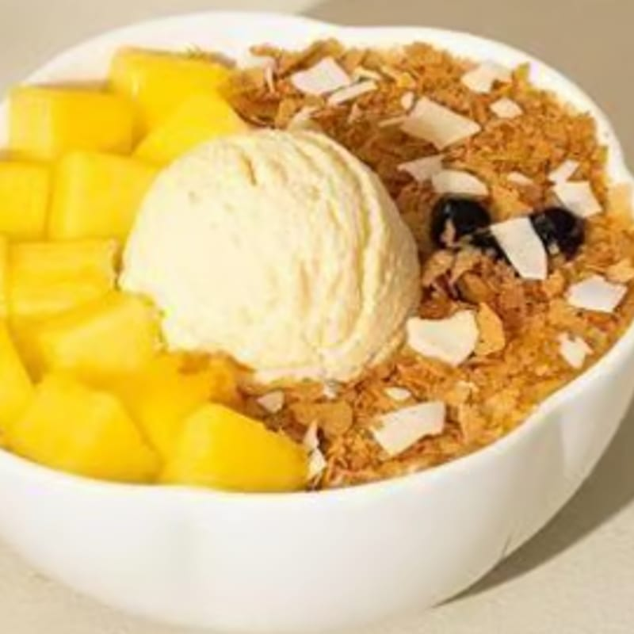
Fresh mango over milk shaved ice and black sticky rice, with milk foam, tapioca pearls, waffle crunch, coconut chips, and vanilla ice cream.
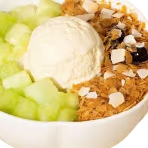
Fresh honeydew melon over milk shaved ice and black sticky rice, with milk foam, tapioca pearls, waffle crunch, coconut chips, and vanilla ice cream.
Only at Rowland Heights & Koreatown
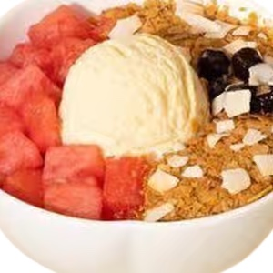
Fresh watermelon over milk shaved ice and black sticky rice, with milk foam, tapioca pearls, waffle crunch, coconut chips, and vanilla ice cream.
Only at Rowland Heights
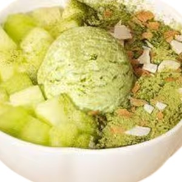
Honeydew melon and matcha over milk shaved ice and black sticky rice, with waffle crunch, coconut chips, and green tea ice cream.
Only at Rowland Heights
Fresh milk tea, for sipping instead of spooning
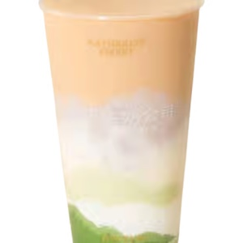
Creamy fresh milk and rich taro purée, paired with soft, chewy mochi.
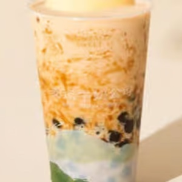
Fragrant black tea and creamy fresh milk, topped with crème brûlée foam and slow-cooked brown sugar pearls.
Only at Mountain View & Flushing
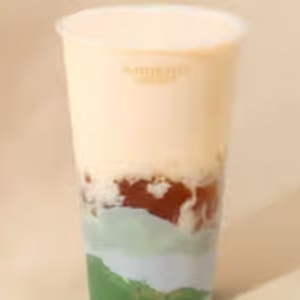
Sweet, chewy peach gum in a creamy milk tea, made with Ceylon black or jasmine green tea. Choose your ice and sugar level.
Only at Koreatown
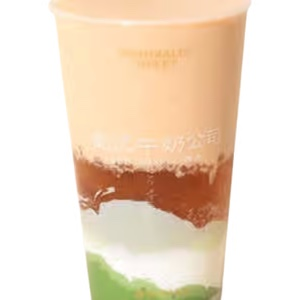
Red dates, brown sugar, and peach gum in a fresh milk base.
Only at Rowland Heights
Fragrant jasmine tea with creamy fresh milk.
Only at Rowland Heights
Add a little extra to any bowl
Chewy, soft rice mochi served with sweet red beans.
Only at Rowland Heights & Flushing
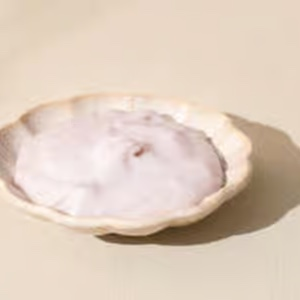
Creamy, sweet taro paste with a delicate texture.
Only at Rowland Heights
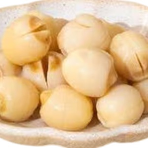
Tender lotus seeds to add to any bowl.
Only at Flushing